1. 实验目的
掌握路由器的IPv6基础配置。
掌握静态IPv6路由的基础配置，理解IPv6数据报文的路由过程。
掌握IPv6 Over IPv4隧道技术的配置实现，并理解其基本原理。
了解IPv6过渡技术的简单应用场景及网络迁移方法。
2. 实验任务
某企业存在一个总部及2个分支，总部与分支之间通过广域专线直连。企业发展初期，网络中仅有IPv4终端与服务器，为了实现总部与分支、分支与分支的互访，网络中部署了静态路由。现在两个分支出现了用于试点IPv6业务的终端，要求在网络不进行较大改动的情况下，快速实现IPv6终端互联互通。
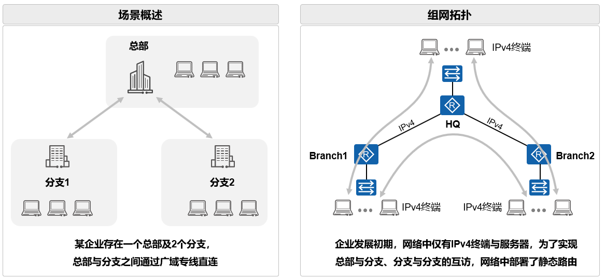 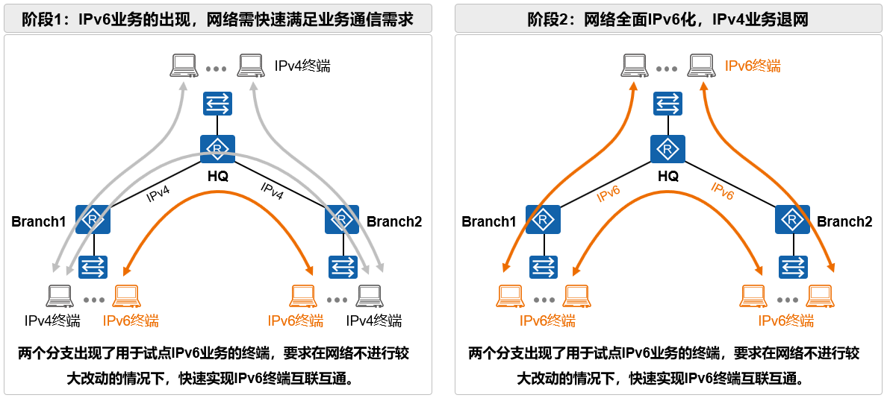3. 实验原理
随着IPv4地址短期问题日益加剧，产业互联网的升级，国家政策的推动，从IPv4网络想IPv6迁移已经成为各网络当前的工作重点。但由于业务延续性的需要，IPv4网络将继续保留相当长时间。在网络向IPv6演进的过程中，部署IPv4地址和IPv6地址共存的网络将无可回避。
3.1. IPv6地址
IPv6地址规范是互联网协议第六版（IPv6）中用于标识网络节点或接口的唯一地址的标准。IPv6地址由128位组成，与IPv4的32位地址相比，提供了更大的地址空间。
3.1.1. PA地址空间（Provider-Aggregatable address space）
PA地址空间指的是一段有区域互联网注册管理机构分配给互联网服务器提供商（Internet Serivce Provider，ISP）的IP地址。ISP可以再根据用户的需求分配地址块，即PA地址随专线、Internet专线等服务同步提供给用户，适用于中小型企业，成本较低。但是切换ISP需要换地址分配。
3.1.2. PI地址空间（Provider-Indepedent address space）
PI地址空间是由预期互联网注册管理机构直接分配给最终用户的一段IP地址。获取了此种地址的用户必须另外联系ISP来获取互联网的接入服务，并将到达相关地址段的路由再互联网上通告。
PI地址与ISP解耦，可以接入多个ISP，地址可自主规划，适用于大中型企业。但是PI地址使用成本较高。
3.1.3. IPv6地址规划
在IPv6地址中，固定前缀和接口ID是两个重要的组成部分。固定前缀用于标识特定的网络或子网，这些前缀由国际注册服务和互联网服务提供商（ISP）进行分配，并具有层次结构。接口ID是IPv6地址中的另一部分，用于唯一标识网络中的特定设备或接口。接口ID的长度通常为64位，并且可以通过多种方式生成，包括手工配置、系统通过软件自动生成或按照IEEE EUI-64规范生成。在大多数情况下，接口ID由设备的MAC地址转换而来，以确保其唯一性。
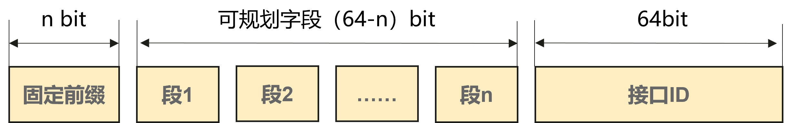3.1.4. IPv6地址格式
IPv6地址由128个bit组成。以16位为一分组，分成8组，每个16位分组写成4各十六进制数，中间用冒号分隔。这种表示法使得IPv6地址看起来像这样：XXXX:XXXX:XXXX:XXXX:XXXX:XXXX:XXXX:XXXX，其中每个“XXXX”代表一个16位的十六进制数。
在实际应用中，为了简化地址的表示，IPv6引入了一种压缩表示法。在地址中，如果一连串的0不需要被显式表示，它们可以被一个双冒号（::）代替。但需要注意的是，在一个IPv6地址中，双冒号只能出现一次，以防止地址的解析产生歧义。
3.2. IPv6过渡技术
IPv6过渡技术是指那些为了使IPv6小岛之间以及IPv6小岛与IPv4海洋之间能够相互通信的过渡技术。目前主要有三种主流的过渡技术：双协议栈技术、协议转换技术、隧道技术。这些过渡技术都是为了在IPv4和IPv6之间建立平稳的过渡，确保网络的连续性和稳定性。具体选择哪种技术取决于网络环境和需求。
3.2.1. 双协议栈技术
这是指终端各类应用系统、运营支撑系统和各网络节点之间同时运行IPv4和IPv6协议栈（两者具有相同的硬件平台），从而实现分别与IPv4或IPv6节点间的信息互通。具有IPv4/IPv6双协议栈的结点称为双栈节点，这些结点既可以收发IPv4报文，也可以收发IPv6报文。
IPv4/IPv6在网络中并存、独立部署。对现有IPv4业务影响较小。
演进方案简单、易理解。网络规划设计工作量相对更少。
{kind=link}
3.2.2. 协议转换技术
这是一种有状态的网络地址与协议转换技术，例如NAT64。它一般只支持通过IPv6网络侧用户发起连接访问IPv4侧网络资源。但NAT64也可通过手工配置静态映射关系，从而实现IPv4网络主动发起连接访问IPv6网络。
适用于纯IPv4网络与纯IPv6网络之间的通信，需在网络中部署NAT、DNS等。
{kind=link}
3.2.3. 隧道技术
隧道技术有以下两个方式：
（1）IPv6 over IPv4隧道：将IPv6流量封装在IPv4隧道中，在IPv4网络中实现IPv6孤岛互通。例如：手动隧道、自动隧道、6PE、6VPE、VXLAN等。
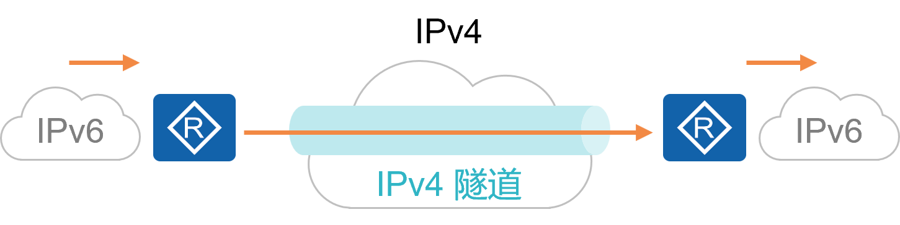{kind=link}
（2）IPv4 over IPv6隧道：将IPv4流量封装在IPv6隧道中，适用于在IPv6传输网络中实现IPv4孤岛之间的互通。例如：手动隧道、SRv6等。
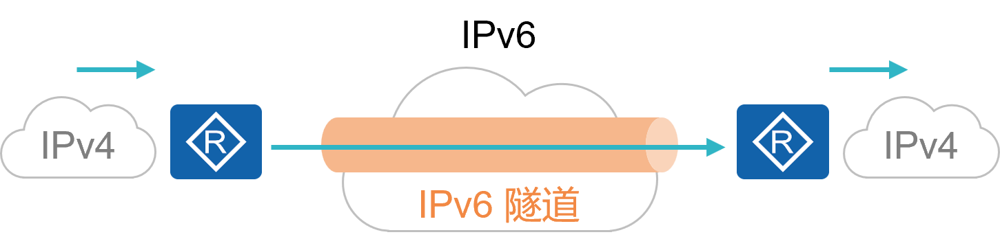{kind=link}
3.3. 隧道技术：IPv6 over IPv4隧道
本次实验主要应用IPv6 over IPv4隧道技术来完成，因此下面将详细介绍该技术。
IPv6 over IPv4隧道的源IPv4地址必须为手工配置，而目的IPv4地址有手工配置和自动获取两种方式。 根据隧道目的IPv4地址的获取方式不同可以将IPv6 over IPv4隧道分为手动隧道和自动隧道。本次实验用到的是手动隧道，自动隧道方案配置请自行上网查资料，本实验不做介绍。
3.3.1. IPv6 over IPv4手动隧道
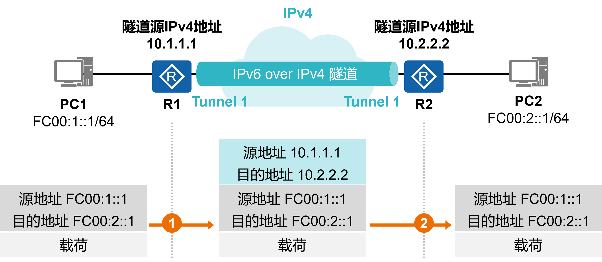应用场景：
两个IPv6孤岛之间的点对点连接。
没有密文传输的需求。
配置实现：
隧道两端的网络设备支持双栈，手工创建隧道。
方案特点：
技术成熟，实现简单。
需要手工配置，只支持点到点连接。
4. 实验环境与分组
路由器2台，二层交换机2台，三层交换机1台，计算机3台，4人一组。
5. 实验组网
如下图，用户通过R1、R2及SW1构建了一个简单的路由器组网，其中R1和R2分别接入了一些终端，当前整个网络是纯IPv4的网络，但是设备都支持IPv6功能。
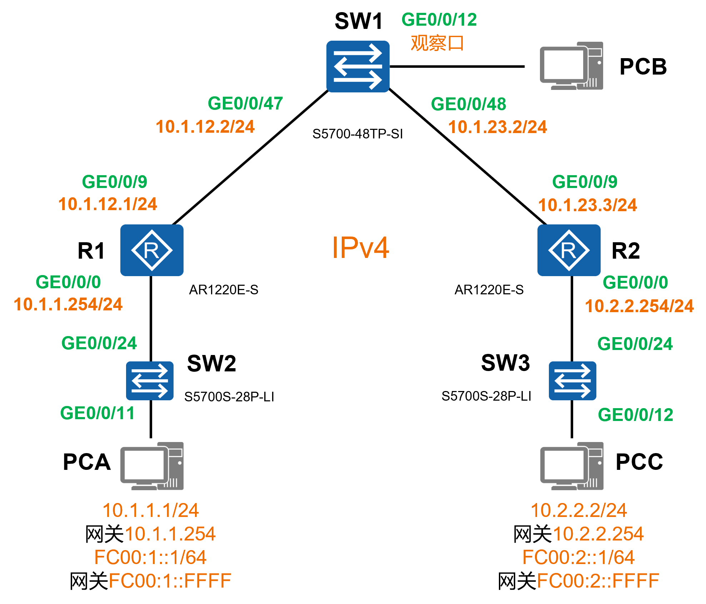现在用户需要在PCA及PCC上部署一些软件应用，并且计划使用IPv6实现应用信息交互，用户首先在PCA、PCC上部署了双栈，即同时开启IPv4及IPv6，并配置了IPv4和IPv6地址，然后希望PCA和PCC之间的IPv4和IPv6流量交互都能同时正常进行。为了快速地满足PCA与PCC之间的IPv6通信，可以在R1和R2之间建立一条IPv6 Over IPv4手工隧道。
IPv6 Over IPv4手工隧道是网络管理员手工在设备上创建的隧道，配置时需要在隧道两端的设备分别配置，该隧道能够将IPv6流量承载于IPv4之上，即在IPv6报文的外层封装一个新的IPv4头部（隧道头部），使得报文能够在IPv4中进行转发，对于中途的转发设备而言，只会根据外层IPv4头部进行报文转发，不会解析内层IPv6报文。
网络的演进状态如下：
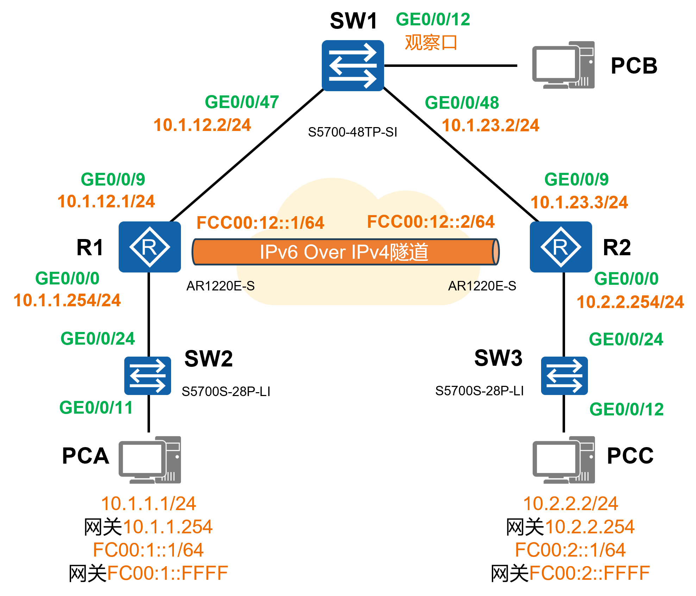6. 实验思路
完成R1、R2及SW1的基础配置。
在R1、R2及SW1上完成配置，使得这三台设备之间能够实现IPv4通信。
在R1、R2、SW1、PCA及PCC上完成配置，使得PCA与PCC所在网段能够实现IPv4通信。
在R1与R2之间构建IPv6 Over IPv4隧道，使得PCA与PCC的IPv6通信流量能够通过该隧道穿越IPv4网络。
7. 实验步骤
7.1. 登陆设备
7.1.1. Step1：
打开SecureCRT，点击窗口中的“快速连接”图标，如图所示：

7.1.2. Step2：
在弹出的窗口中，输入需通过telnet访问的设备IP（见表 ATM管理机地址表1 ）和端口号，然后点击“连接”即可。

提示
交换机 不需要输入用户名和密码 。
路由器R1和R2的 用户名：admin，密码：Admin@huawei
7.1.3. Step3：
登录成功后，即进入用户视图。在用户视图下，用户可以完成查看运行状态和统计信息等功能，此时屏幕上显示:

7.2. 清空配置
每次做实验前，先清空上一次的配置，本次实验需清空R1、R2、SW1、SW2、SW3的配置。
7.2.1. Step1：
在用户视图下，使用如下命令进行配置的清空
1reset saved-configuration //清除配置
2The device configurations will be erased to reconfigure. Are you sure?(y/n):y //输入y继续删除
3display saved-configuration //查看删除后的配置
查看删除后的配置：

7.2.2. Step2：
在用户视图下，使用如下命令进行重启
1reboot //重启
2All the configuration will be saved to the next startup configuration. Continue? [y/n]:n //输入n不保存到启动配置
3System will reboot! Continue? [y/n]: //输入y，继续重新启动
4display current-configuration //重启后查看当前配置

7.3. 导入初始配置
R1导入下列配置
1 system-view
2 sysname R1
3 user-interface console 0
4 idle-timeout 60
5 quit
6 int G0/0/9
7 undo ip add
8 quit
9 int G0/0/8
10 shutdown
11 quit
12 quit
R2导入下列配置
1 system-view
2 sysname R2
3 user-interface console 0
4 idle-timeout 60
5 quit
6 int G0/0/9
7 undo ip add
8 quit
9 int G0/0/8
10 shutdown
11 quit
12 quit
SW1导入下列配置
1 system-view
2 sysname SW1
3 user-interface console 0
4 idle-timeout 60
5 quit
6 int range G0/0/1 to G0/0/4
7 shutdown
8 quit
9 observe-port 1 interface G0/0/12
10 interface G0/0/47
11 port-mirroring to observe-port 1 both
12 quit
13 quit
在SW1中，我们将进行端口镜像配置，以便在PCB上捕获R1和R2之间的报文。observe-port 1 interface G0/0/12命令是将G0/0/12设置为观察口，interface G0/0/47命令是进入G0/0/47接口视图，port-mirroring to observe-port 1 both命令是将G0/0/47设置为observer-port 1的被观察口。如此一来，所有经过SW1的G0/0/47接口的流量，都会被复制到G0/0/12观察端口上，这样就可以在PCB上观察所有经过SW1的G0/0/47接口的报文，也就是R1和R2之间的报文。
备注
端口镜像
端口镜像通常用于网络监控、故障排查和安全审计等场景。通过镜像流量到观察端口，管理员或安全设备可以实时查看和分析网络中的数据包，从而发现潜在的问题或威胁。
SW2导入下列配置
1 system-view
2 sysname SW2
3 user-interface console 0
4 idle-timeout 60
5 quit
6 int range G0/0/1 to G0/0/4
7 shutdown
8 quit
9 quit
SW3导入下列配置
1 system-view
2 sysname SW3
3 user-interface console 0
4 idle-timeout 60
5 quit
6 int range G0/0/1 to G0/0/4
7 shutdown
8 quit
9 quit
导入信息步骤如下图所示： 复制以上的代码并分别粘贴入SW2、SW3。


7.4. 完成R1、R2及SW1的接口IPv4地址配置
7.4.1. R1的配置
1system-view
2interface G0/0/9
3ip address 10.1.12.1 255.255.255.0
4quit
5interface G0/0/0
6undo portswitch //把G0/0/0默认的二层接口转为三层接口
7ip address 10.1.1.254 255.255.255.0
8quit
7.4.2. R2的配置
1system-view
2interface G0/0/9
3ip address 10.1.23.3 255.255.255.0
4quit
5interface G0/0/0
6undo portswitch //把G0/0/0默认的二层接口转为三层接口
7ip address 10.2.2.254 255.255.255.0
8quit
7.4.3. SW1的配置
1system-view
2vlan batch 10 11 //创建vlan 10和vlan 11
3interface G0/0/47
4port link-type access
5port default vlan 10
6quit
7interface G0/0/48
8port link-type access
9port default vlan 11
10quit
11
12interface Vlanif 10
13ip address 10.1.12.2 255.255.255.0
14quit
15
16interface Vlanif 11
17ip address 10.1.23.2 255.255.255.0
18quit
7.5. 在R1、R2及SW1上完成配置，使得这三台设备之间能够相互通信
7.5.1. 测试R1和R2的连通性
在上述配置完成后，R1与SW1，SW1与R2是能够相互通信的，以R1和SW1为例，设备之间直接的链路，对于R1而言，当我们在设备上配置G0/0/9的IPv4地址后，设备会自动在其路由器中生成到达该接口所在网段的直连路由，因此它可以直接通过直连路由到达SW1，无需人工干预路由信息。
但是，此时R1是无法与R2相互访问的，可以在R1上执行如下命令：
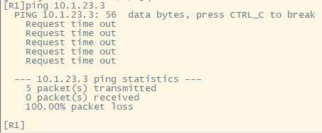从以上输出可以看出，R1无法ping通R2，之所以出现这种现象，是因为R1的路由表中并没有到达R2的路由信息。
请用display ip routing-table查看R1和R2的路由表。
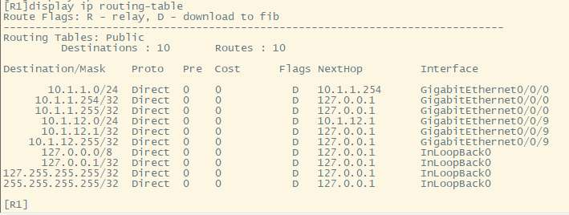 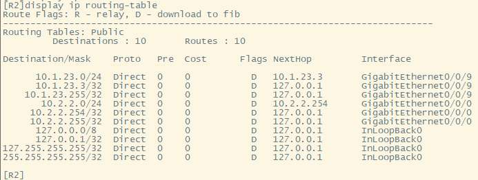7.5.2. 添加R1、R2静态路由
现在为R1配置到达10.1.23.3的路由。
1ip route-static 10.1.23.0 24 10.1.12.2
ip route-static 10.1.23.0 24 10.1.12.2 是一条静态路由配置命令。当路由器需要发送数据包到10.1.23.0/24这个网络时，它应该将数据包发送到10.1.12.2这个地址。下面是对这条命令各部分的解释：
ip route-static：这是命令的关键字，用于添加静态路由条目。
10.1.23.0：这是目的网络的IP地址。
24：这是子网掩码的长度，表示子网掩码为255.255.255.0。
10.1.12.2：这是下一跳地址，也就是数据包应该被发送到的下一个路由器的IP地址，用于到达目的网络10.1.23.0/24。
再在R1上查看IPv4路由表：
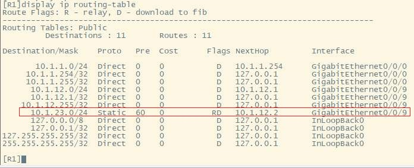R1的路由表中已成功添加到达10.1.23.0/24的路由，那么，此时R1是否已经能够ping通R2呢？
如果测试一下，会发现R1依然无法ping通R2，这是因为一个应用程序触发的数据交互过程往往是双向的，有去得有回，此时R1发往R3的报文能够到达下一跳SW1，而SW1又能根据直连路由将报文转发给R2，但是R2的应答报文呢？R2此时并无到达R1的路由，因此R1 ping R2的回程报文无法到达R1。
在R2上添加路由：
1ip route-static 10.1.12.0 24 10.1.23.2
此时，请自行测试是否能在R1 ping通R2？
7.6. 在R1、SW1、R2、PCA及PCC上完成配置，使得PCA与PCC所在网段能够相互通信
7.6.1. 配置PCA和PCC的IP
备注
实验室电脑上有两个有线网卡，我们需要配置的是第二块网卡，即“以太网2”。一台电脑只能有一个默认网关，需要把“以太网”的默认网关删掉，才能配置“以太网2”的默认网关。只要删掉“以太网”的默认网关，其他不要改动！！！
PCA的配置如下：
IP：10.1.1.1/24 网关：10.1.1.254
PCC的配置如下：
IP：10.2.2.2/24 网关：10.2.2.254
在PCA上去ping PCC会发现无法ping通。
分析一下原因就会发现，当PC1 ping PC2时，PC1发出的ICMP Echo Reply报文的源IPv4地址是PCA的地址10.1.1.254，目的地址则是PCC的地址：10.2.2.2，这个报文从PCA发给了它的缺省网关10.1.1.254，也就是R1，然而R1并没有达到目的网段路由，因此该报文被丢弃。
注意
为了让PCA与PCC能够相互通信，我们需要：
让R1知道如何达到10.2.2.0/24网段；
让SW1知道如何达到10.1.1.0/24网段和10.2.2.0/24网段；
让R2知道如何达到10.1.1.0/24网段。
请同学们在R1、SW1及R2上自行完成上面3个配置要求，使得PCA与PCC能够相互通信。可参考上述静态路由的配置方法：）
完成上述配置后，在PCA ping PCC：
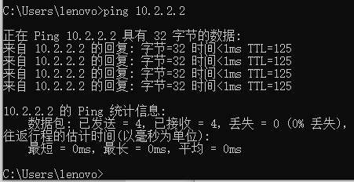7.7. 在R1和R2之间构建IPv6 Over IPv4隧道
我们在前述步骤中所做的配置不仅仅使得PCA与PCC能够进行IPv4通信，三台网络设备之间亦实现了基于IPv4的相互通信，这为本步骤提供了基础。
由于用户将在PCA与PCC上启动IPv6并且希望通过网络进行通信，而当前R1、SW1及R2所构成的网络是IPv4 Only（纯IPv4）网络，并不能直接转发IPv6流量，因此需部署IPv6过渡技术。在本实验中，我们将使用IPv6 Over IPv4隧道技术，在R1与R2之间构建一条该类型的隧道，如此一来，PC发给R1或R2的IPv6流量到达R1或R2后，会被它们封装到该隧道中，将IPv6流量外层包裹一个IPv4的外层头部，并转发给SW1，由其转发到对端路由器。
7.7.1. R1的配置
1[R1]IPv6
2interface Tunnel0/0/0 //创建隧道
3tunnel-protocol ipv6-ipv4 //指定为IPv6 Over IPv4类型
4source 10.1.12.1 //隧道的源地址
5destination 10.1.23.3 ////隧道的目的地址
6ipv6 enable //激活IPv6
7ipv6 address FC00:12::1 64 //隧道接口的IPv6地址
8quit
在上述配置中，我们首先在设备上全局激活IPv6，然后通过interface Tunnel0/0/0命令创建了一个编号为0/0/0的Tunnel（隧道）接口，并进入接口配置视图，在该配置视图下，tunnel-protocol ipv6-ipv4命令指定该Tunnel接口的类型为IPv6 Over IPv4类型，source 10.1.12.1和destination 10.1.23.3命令分别指定隧道的源和目的地址，即该隧道的两个端点。当然，由于当前网络中已经部署了静态路由，因此这两个IPv4地址是相互可达的。此外，ipv6 enable 命令用于将隧道接口激活IPv6，ipv6 address FC00:12::1 64命令用来为接口配置IPv6地址。此时对于R1而言，它将认为设备上又多了一个（逻辑）接口，该接口具备IPv6地址，并且该接口的对端便是R2。
7.7.2. R2的配置
R2也要做类似的配置
1[R2]IPv6
2interface Tunnel0/0/0
3tunnel-protocol ipv6-ipv4
4source 10.1.23.3
5destination 10.1.12.1
6ipv6 enable
7ipv6 address FC00:12::2 64
8quit
完成上述配置后，在R1上ping一下R2的Tunnel0/0/0接口地址：
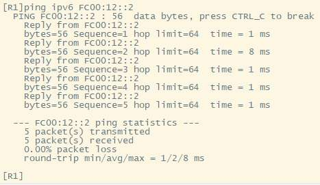7.8. 实现PCA与PCC的IPv6通信
现在R1与R2之间的IP Over IPv4隧道已经建立完成，接下来PCA与PCC需要进行IPv6通信，在此之前，需先完成R1的G0/0/0、R2的G0/0/0接口IPv6配置，这两个接口分别充当PCA及PCC的IPv6网关；此外，以PCA发往PCC的流量为例，PCA首先会将流量发给网关R1，R1需要将该IPv6流量引入它与R2之间的IPv6 Over IPv4隧道，我们将通过静态路由来实现流量引导，将该流量引导到Tunnel0/0/0接口，从而让流量通过隧道到达SW1，再由SW1将数据封装后转发给PCC。
7.8.1. R1的配置
1interface G0/0/0
2ipv6 enable
3ipv6 address FC00:1::FFFF 64
4quit
5
6ipv6 route-static FC00:2:: 64 Tunnel 0/0/0
在上述配置中，ipv route-static FC00:2:: 64 Tunnel 0/0/0命令用于配置一条IPv6静态路由，该路由的目的网段是FC00:2::/64，即PCC所在网段，到达该网段的出接口是Tunnel 0/0/0。如此一来，从PCA发往PCC的流量到达R1后，R1在IPv6路由表中查询目的IPv6地址FC00:2::1，发现所匹配的路由出接口为Tunnel 0/0/0接口，而该接口为IPv6 Over IPv4类型，隧道源为10.1.12.1，隧道目的为10.1.23.3，于是将IPv6报文进行IPv4封装，在IPv4报文头部中写入上述源、目的地址，然后将报文转发给SW1，SW1则将报文转发到目的地R2。
7.8.2. R2的配置
注意
R2的配置与R1类似，但注意IPv6地址与网段的变化。
请同学们自行完成R2 Tunnel配置。
7.8.3. PCA和PCC增加IPv6地址
在PCA上配置IPv6地址：FC00:1::1/64，网关：FC00:1::FFFF
在PCC上配置IPv6地址：FC00:2::1/64，网关：FC00:2::FFFF
现在，从PCA ping PCC：
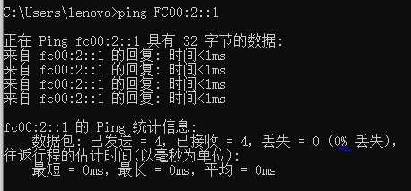PCA与PCC之间的IPv6通信已经正常了。 此时可以在PCA ping PCC时，在PCB上获取R1发往R2的ICMPv6报文：
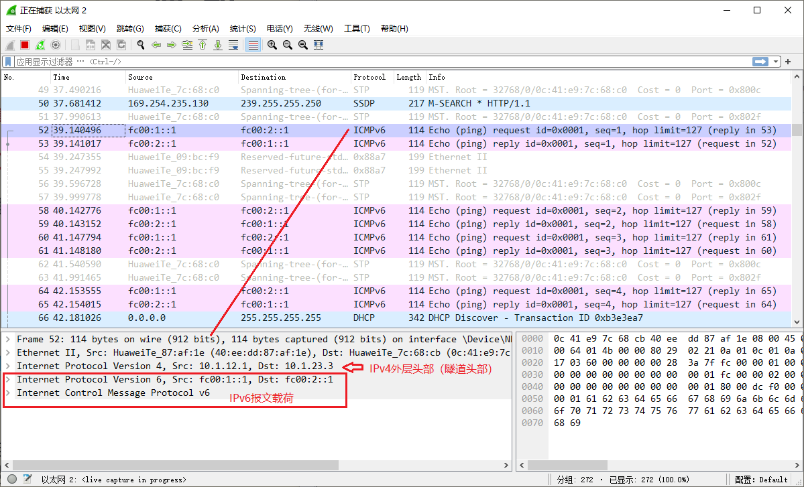注意
选做：网络全面IPv6化（IPv6 Only），IPv4业务退网
要求：将分支互联网络过渡到IPv6，部署IPv6静态路由，实现三个站点（R1、SW1、R2）之间的IPv6互联互通，并取消IPv4路由协议、删除IPv6 Over IPv4隧道。
完成配置后，从PCA ping PCC（FC00:2::1），捕获并分析ICMPv6报文。
做完的同学，请找老师/助教验收。